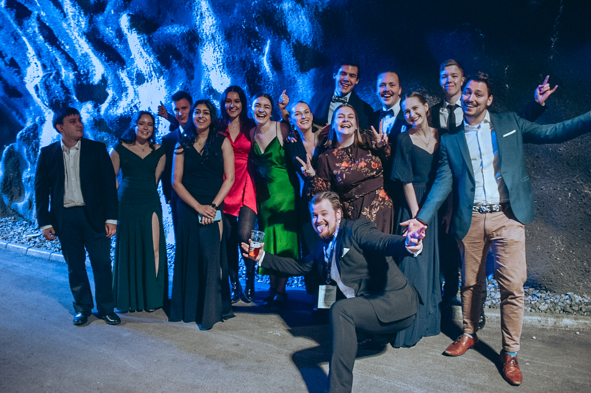

Om oss
DARLING er linjeforeningen for designfag ved NTNU. Vi er foreningen til alle som studerer årsstudium webdesign, bachelor i webutvikling, grafisk design og interaksjonsdesign, og master i interaksjonsdesign. Alle som går på ett av disse studiene er automatisk medlem av DARLING.
DARLING ledes av et styre på omtrent 10-15 personer. Disse blir valgt inn på årsmøtet som er satt opp hver vår. Styret har ansvar for den daglige driften av foreningen og representerer foreningen utad. Styret jobber for å tilrettelegge for god kontakt mellom studenter og næringsliv, i tillegg til å skape et godt samhold på designlinjene ved å arrangere sosiale og faglige arrangementer. For sistnevnte gjelder karrieredagen, designdagen, jevnlige bedriftspresentasjoner spredt utover semesteret, designkvelder, workshops og andre typer arrangementer.